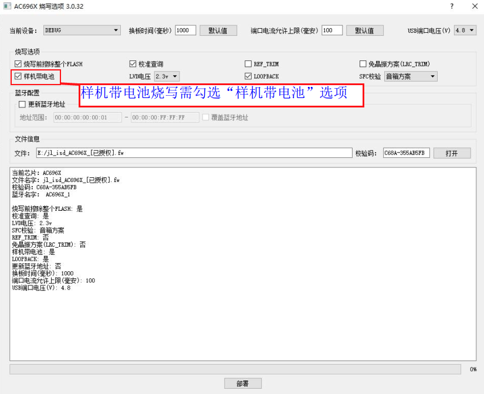

2.14. Programming Devices with Batteries Attached
2.14.1. Use case
Assembled finished products sometimes need a second firmware upgrade. If the finished products have a reserved USB upgrade interface and the upgrade volume is large enough that upgrade efficiency needs to be improved, consider using the 1-to-8 programmer to upgrade the firmware of the finished products with their batteries attached.
Note
1. Blank chips cannot be upgraded with the battery attached;
2. When programming with the battery attached, the load draws too much current, and the programmer can tolerate at most 1.5A of current. To program devices with batteries attached, use the "USB power toggle switch" to cut off the power supply of the USB programming ports (the device's battery voltage must be normal; if the voltage is too low, fully charge the battery before upgrading);
3. If the power supply from the USB programming ports to the devices has not been cut off, the number of devices programmed simultaneously must be kept to no more than 4; otherwise, the programmer will burn out, and you will bear the loss yourself;
2.14.2. Programming with the battery attached
For programming devices with batteries attached, the 1-to-8 programmer currently supports two upgrade methods: [Device with battery attached] (样机带电池) and [USB-device with battery attached] (USB-样机带电池). Which methods are supported depends on what the deployment screen of the PC tool offers.
Note
For example, to enter upgrade mode with [USB-device with battery attached] (USB-样机带电池) on the AC700N and JL700N chip models, the SDK must enable the PC function; whether programming with the battery attached is possible must be confirmed by the SDK provider. For the USB battery-attached programming configuration, see "USB programming of devices with batteries attached"
Configuration for programming devices with batteries attached
[1] Deploy the target chip fw file to the programmer (see the section "Update the target chip firmware on the programmer");
[2] During deployment, check "Device with battery attached" (样机带电池) in the programming options. The programmer supports programming with the battery attached only after the target chip firmware has been deployed to it with this option, as shown in Configuration for programming devices with batteries attached;

Configuration for programming devices with batteries attached
Programming Devices with Batteries Attached
Programming a device with the battery attached follows basically the same procedure as normal device chip firmware programming.
[1] The battery-powered device must be running the SDK normally;
[2] After the programmer has powered on, if the device's battery voltage is normal, use the "USB power toggle switch" to cut off the power supply of the USB programming ports;
[3] Connect the battery-powered device to the programmer's USB programming port with a USB cable, then press the button to reset the device, and programming proceeds;
After successful programming, unplug the USB cable; the firmware upgrade is then complete. After the device firmware has been upgraded successfully, perform the power-on operation on the device to turn it on.
Note
If the device has no dedicated button for resetting it, the device firmware can reset and enter the rom upgrade function by checking the signal on the DP or DM pin of the programmer's USB, or trigger entry into upgrade mode by detecting the USB VCC power supply, and so on. Currently, triggering upgrade entry by counting DP clock pulses is the most common method; triggering the device only by the connection of USB_VCC may easily cause false triggering.
2.14.3. USB programming of devices with batteries attached
The difference from the normal battery-attached programming above is that programming can proceed without pressing a button to reset the device.
Steps:
[1] The SDK must enable the PC function;
[2] The battery-powered device must be powered on and running the SDK normally;
[3] Deploy the target chip fw file to the programmer (see the section "Update the target chip firmware on the programmer");
[4] During deployment, check "USB-device with battery attached" (USB-样机带电池) in the programming options. The programmer supports programming with the battery attached only after the target chip firmware has been deployed to it with this option, as shown in Configuration for programming devices with batteries attached;
[5] After deployment, power-cycle the programmer. After the programmer has powered on, if the device's battery voltage is normal, use the "USB power toggle switch" to cut off the power supply of the USB programming ports;
[6] Connect the battery-powered device to the programmer's USB programming port with a USB cable; the device enters upgrade mode;
After successful programming, unplug the USB cable; the firmware upgrade is then complete. After the device firmware has been upgraded successfully, perform the power-on operation on the device to turn it on.

USB battery-attached programming configuration
2.14.4. Notes
When the 1-to-8 programmer programs devices with batteries attached, the battery makes the device actually draw a large current, so the current at the 1-to-8 programmer's USB programming ports ranges from tens of mA to several hundred mA. Even if the USB port circuitry can withstand several hundred mA, if 8 channels program at the same time, the total supply from the power adapter will reach several amps, while the programmer can tolerate at most 1.5A, which may burn out the power adapter or the programmer.
Note
1. Blank chips cannot be upgraded with the battery attached;
2. When programming devices with batteries attached, the load draws too much current, and the programmer can tolerate at most 1.5A. To program devices with batteries attached, use the "USB power toggle switch" to cut off the power supply of the USB programming ports (the device's battery voltage must be normal; if the voltage is too low, fully charge the battery before upgrading); otherwise, the number of devices programmed simultaneously must be kept to no more than 4, or the programmer will burn out, and you will bear the loss yourself;
2.14.5. Operation and debugging guide for upgrading devices with batteries attached
2.14.5.1. Purpose and principle of the [Device with battery attached] option
With [Device with battery attached] (样机带电池) checked: the programmer continuously sends the upgrade command. This ensures that during its brief reset, the device receives the command in time and successfully enters upgrade mode, instead of resetting and running the original application again.
With [Device with battery attached] unchecked: the programmer takes over power control. The process is: the programmer powers on the device and sends the upgrade command -> if this succeeds, the upgrade starts; if it fails, the programmer cuts the power, then powers on again and retries, repeating this cycle.
Note: If the device is actually being upgraded with its battery attached but this option is not checked (the USB cable is simply plugged in), there is some chance of entering upgrade mode by resetting with the button, but the recognition rate is extremely low. This is because it is hard to time the reset so that it avoids the programmer's power-on or power-off delay phases. Even if recognition occasionally succeeds, subsequent steps such as frequency offset calibration or chip testing may fail because of power control conflicts. Therefore, be sure to check [Device with battery attached] when upgrading with the battery attached.
2.14.5.2. Key requirement for upgrading with the battery attached
The key to a successful upgrade with the battery attached is that the device must have a "reset process" or an equivalent reset mechanism. There are four common reset methods:
Hardware switch reset: the board has a physical switch that directly disconnects and reconnects the battery to perform a power-on reset (similar to the programmer controlling power-off and power-on).
Button reset: a long or short press of the reset button (Reset key) on the board triggers a restart and entry into upgrade mode.
Signal/command reset: the SDK firmware running on the device supports monitoring level changes on the DP/DM pins of the programmer's USB port, or receiving a specific command sent by the programmer, to trigger a reset.
Voltage-triggered reset: the device's SDK uses changes in the programmer's USB_VCC voltage to trigger a reset. In this case, USB_VCC must be set to ON in the deployment screen.
2.14.5.3. Troubleshooting steps when the reset method is unknown
If you are not sure which reset method the current device supports, try the following steps to troubleshoot:
Try a physical reset (battery disconnect/reconnect method):
Check [Device with battery attached] (样机带电池) and plug the device's USB into the programmer.
Turn off the programmer's USB_VCC (or switch off the per-port power switch).
Physically disconnect the positive terminal of the device's battery, then reconnect it (simulating a power-on reset).
Check whether the programmer recognizes the device and programs it. If nothing happens, repeat the "disconnect-reconnect" operation several times.
Conclusion: If this method cannot enter upgrade mode, it usually means that the device does not support regular upgrades with the battery attached.
Check for power supply conflicts:
Check whether the device's power supply is connected to the programmer's USB_VCC. If USB_VCC is OFF, it may pull down the device voltage and cause a power supply problem.
Cross-check (power-off method):
Try leaving [Device with battery attached] unchecked and physically disconnecting the device's battery, and see whether the upgrade works normally.
If the upgrade succeeds with the battery disconnected, the upgrade path between the programmer and the device is working. If you then check [Device with battery attached] again and disconnect and reconnect the battery, the upgrade usually succeeds as well.
Seek technical support:
If the "disconnect/reconnect battery" method above works, the upgrade path is fine, and the key is to determine how the device can be triggered to reset while the battery is permanently connected. Consult the device's application developer or hardware circuit designer directly.
Try upgrading via the USB private protocol:
If none of the above methods works, try checking [USB-device with battery attached] (usb样机带电池).
This method applies when the device is recognized as a USB device (such as an audio device, disk or mouse) when plugged into a PC, and the device has the private protocol enabled and supports receiving the USB upgrade reset command sent by the programmer.
Use the Forced Upgrade Tool:
If none of the above methods solves the problem, you can use the Forced Upgrade Tool to recognize the device and control the upgrade with the 1-to-1 PC tool.
2.14.5.4. Upgrading crystal-less chips with the battery attached
The key difference between crystal-less chips and chips with a crystal when upgrading with the battery attached lies in where the clock system is initialized. This directly determines whether the chip can still communicate with the programmer when the firmware is abnormal or the Flash is empty. Details are as follows:
1. Upgrade limitations of crystal-less chips
For models that support crystal-less upgrades with the battery attached (such as AC632N, AC695X, AC696X and AC608N), clock initialization is usually performed in the
ubootstage. Therefore, whether an upgrade with the battery attached is possible depends mainly on whether the device's current application supports it.
If theflash ubootis erased during the upgrade, or theflashis empty, the device cannot complete clock initialization after a reset with the battery attached, and therefore cannot establish normal USB or UART communication with the programmer, so the upgrade fails.
2. Upgrade advantages of chips with a crystal
Unlike crystal-less chips, chips with a crystal already have their clock system properly initialized within the
maskrom. This means that even if the chip is blank or its internal firmware is incomplete, as long as it is reset with the battery attached, the chip can still start its low-level communication module normally,
and thus connect to the programmer and complete the upgrade.
Summary
Crystal-less upgrades with the battery attached have a lower fault tolerance and depend heavily on the integrity of
uboot; chips with a crystal, thanks to the support of the low-level hardware (maskrom), have more robust communication and do not depend on the flash uboot part. That said, some models also support initializing the clock system in the maskrom when used without a crystal.